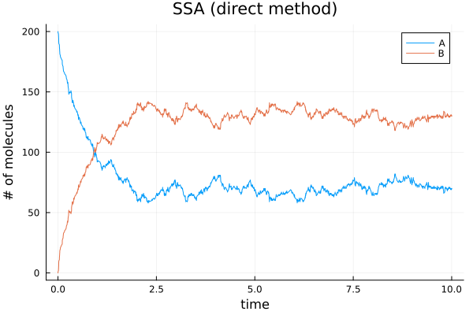
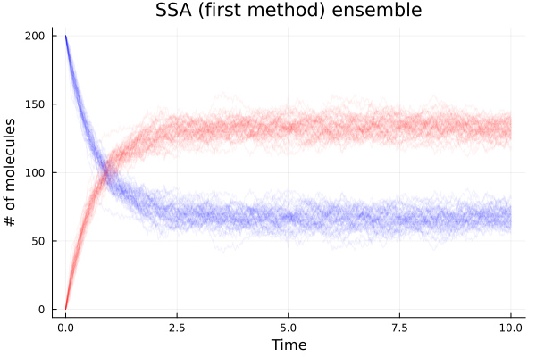
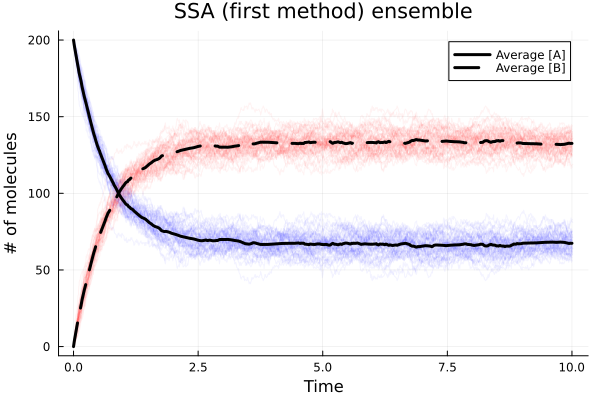
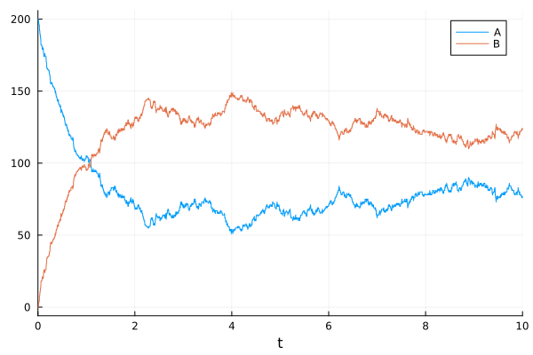
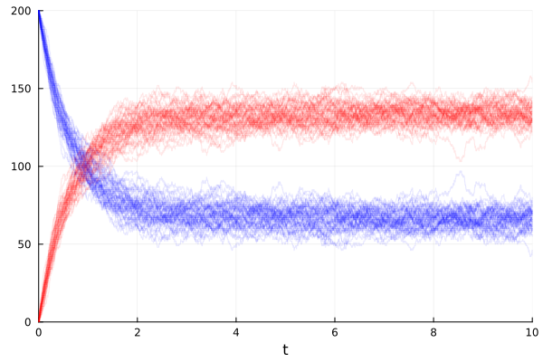
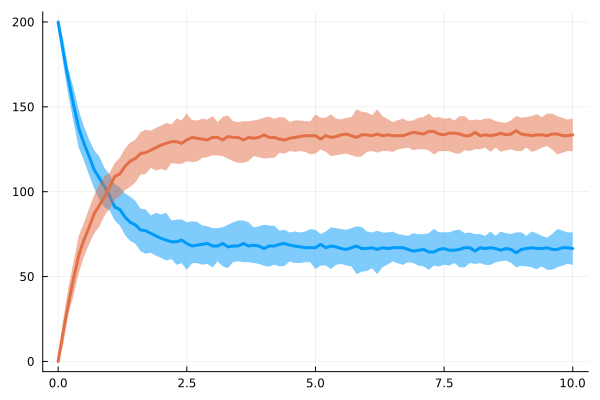

Stochastic simulations#
Gillespie Algorithm#
using Plots
using DataInterpolations: LinearInterpolation
using StatsBase: Weights, sample
using Statistics: mean
using Random
using DisplayAs: PNG ## For faster rendering
Random.seed!(2024)
Random.TaskLocalRNG()
Do-it-yourself#
Stochastic chemical reaction: Gillespie Algorithm (direct and first reaction method) Adapted from: Chemical and Biomedical Engineering Calculations Using Python Ch.4-3
function ssa_alg(model, u0::AbstractVector, tend, p, stoich; tstart=zero(tend), method=:direct)
t = tstart ## Current time
ts = [t] ## Time points
u = copy(u0) ## Current state
us = copy(u') ## States over time
while t < tend
a = model(u, p, t) ## propensities
if method == :direct
dt = randexp() / sum(a) ## Time step for the direct method
du = sample(stoich, Weights(a)) ## Choose the stoichiometry for the next reaction
elseif method == :first
dts = randexp(length(a)) ./ a ## time scales of all reactions
i = argmin(dts) ## Choose the most recent reaction to occur
dt = dts[i]
du = stoich[i]
else
error("Method should be either :direct or :first")
end
u .+= du ## Update time
t += dt ## Update time
us = [us; u'] ## Append state
push!(ts, t) ## Append time point
end
return (t=ts, u=us)
end
ssa_alg (generic function with 1 method)
Propensity model for this example reaction. Reaction of A <-> B with rate constants k1 & k2
model(u, p, t) = [p.k1 * u[1], p.k2 * u[2]]
model (generic function with 1 method)
parameters = (k1=1.0, k2=0.5)
(k1 = 1.0, k2 = 0.5)
Stoichiometry for each reaction
stoich = [[-1, 1], [1, -1]]
2-element Vector{Vector{Int64}}:
[-1, 1]
[1, -1]
Initial conditions (Usually discrete values)
u0 = [200, 0]
2-element Vector{Int64}:
200
0
Simulation time
tend = 10.0
10.0
Solve the problem using both direct and first reaction method
@time soldirect = ssa_alg(model, u0, tend, parameters, stoich; method=:direct)
@time solfirst = ssa_alg(model, u0, tend, parameters, stoich; method=:first)
1.044179 seconds (783.45 k allocations: 54.729 MiB, 14.99% gc time, 99.22% compilation time)
0.009261 seconds (16.33 k allocations: 14.929 MiB)
(t = [0.0, 0.006874672879606227, 0.0070050915014185, 0.01329115182676454, 0.015335530116774018, 0.01942319769041779, 0.021346508038833215, 0.02345030020299408, 0.025497753122539372, 0.02734483697039726 … 9.937773197389458, 9.938360255993572, 9.964450740930666, 9.96564917153764, 9.975440668199402, 9.978594329657025, 9.982318425245289, 9.987213207313044, 9.995833233887383, 10.024199143896238], u = [200 0; 199 1; … ; 75 125; 74 126])
Plot the solution from the direct method
plot(soldirect.t, soldirect.u,
xlabel="time", ylabel="# of molecules",
title="SSA (direct method)", label=["A" "B"]) |> PNG

Plot the solution by the first reaction method
plot(solfirst.t, solfirst.u,
xlabel="time", ylabel="# of molecules",
title="SSA (1st reaction method)", label=["A" "B"]) |> PNG
Running 50 simulations
numRuns = 50
@time sols = map(1:numRuns) do _
ssa_alg(model, u0, tend, parameters, stoich; method=:first)
end;
0.812526 seconds (1.02 M allocations: 770.311 MiB, 50.01% gc time, 10.26% compilation time)
Average values and interpolation
ts = range(0, tend, 101)
a_avg(t) = mean(sols) do sol
A = LinearInterpolation(sol.u[:, 1], sol.t)
A(t)
end
b_avg(t) = mean(sols) do sol
A = LinearInterpolation(sol.u[:, 2], sol.t)
A(t)
end
b_avg (generic function with 1 method)
Plot the solution
fig1 = plot(xlabel="Time", ylabel="# of molecules", title="SSA (first method) ensemble")
for sol in sols
plot!(fig1, sol.t, sol.u, linecolor=[:blue :red], linealpha=0.05, label=false)
end
fig1 |> PNG

Plot averages
plot!(fig1, a_avg, 0.0, tend, linecolor=:black, linewidth=3, linestyle=:solid, label="Average [A]") |> PNG
plot!(fig1, b_avg, 0.0, tend, linecolor=:black, linewidth=3, linestyle=:dash, label="Average [B]") |> PNG
fig1 |> PNG

Using Catalyst (recommended)#
SciML/Catalyst.jl is a domain-specific language (DSL) package to simulate chemical reaction networks.
using Catalyst
using JumpProcesses
using Plots
two_state_model = @reaction_network begin
k1, A --> B
k2, B --> A
end
Precompiling Catalyst...
21638.4 ms ✓ Catalyst
1 dependency successfully precompiled in 22 seconds. 295 already precompiled.
Precompiling DataInterpolationsSymbolicsExt...
6056.6 ms ✓ DataInterpolations → DataInterpolationsSymbolicsExt
1 dependency successfully precompiled in 7 seconds. 164 already precompiled.
The system with integer state variables belongs to DiscreteProblem. A DiscreteProblem could be further dispatched into other types of problems, such as ODEProblem, SDEProblem, and JumpProblem.
params = [:k1 => 1.0, :k2 => 0.5]
u0 = [:A => 200, :B => 0]
tspan = (0.0, 10.0)
jinput = JumpInputs(two_state_model, u0, tspan, params)
JumpInputs storing
JumpSystem: ##ReactionSystem#240
Problem type: DiscreteProblem
In this case, we would like to solve a JumpProblem using Gillespie’s Direct stochastic simulation algorithm (SSA).
jprob = JumpProblem(jinput)
sol = solve(jprob)
plot(sol) |> PNG

Parallel ensemble simulation
ensprob = EnsembleProblem(jprob)
sim = solve(ensprob, SSAStepper(), EnsembleThreads(); trajectories=50)
EnsembleSolution Solution of length 50 with uType:
SciMLBase.ODESolution{Float64, 2, Vector{Vector{Float64}}, Nothing, Nothing, Vector{Float64}, Nothing, Nothing, SciMLBase.DiscreteProblem{Vector{Float64}, Tuple{Float64, Float64}, true, ModelingToolkit.MTKParameters{Vector{Float64}, Vector{Float64}, Tuple{}, Tuple{}, Tuple{}, Tuple{}}, SciMLBase.DiscreteFunction{true, true, SciMLBase.DiscreteFunction{true, SciMLBase.FullSpecialize, SciMLBase.var"#246#247", Nothing, typeof(SciMLBase.DEFAULT_OBSERVED), Nothing, Nothing}, Nothing, ModelingToolkit.ObservedFunctionCache{ModelingToolkit.JumpSystem{RecursiveArrayTools.ArrayPartition{Any, Tuple{Vector{JumpProcesses.MassActionJump}, Vector{JumpProcesses.ConstantRateJump}, Vector{JumpProcesses.VariableRateJump}, Vector{Symbolics.Equation}}}}}, ModelingToolkit.JumpSystem{RecursiveArrayTools.ArrayPartition{Any, Tuple{Vector{JumpProcesses.MassActionJump}, Vector{JumpProcesses.ConstantRateJump}, Vector{JumpProcesses.VariableRateJump}, Vector{Symbolics.Equation}}}}, Nothing}, Base.Pairs{Symbol, Union{}, Tuple{}, @NamedTuple{}}}, JumpProcesses.SSAStepper, SciMLBase.ConstantInterpolation{Vector{Float64}, Vector{Vector{Float64}}}, SciMLBase.DEStats, Nothing, Nothing, Nothing, Nothing}
plot(sim, alpha=0.1, color=[:blue :red]) |> PNG

summ = EnsembleSummary(sim, 0:0.1:10)
plot(summ, fillalpha=0.5) |> PNG

See also the JumpProcesses.jl docs about discrete stochastic examples.
High-level solutions using
Catalyst.jland low-level solutions defining the jumps directly.Coupling stochastic discrete jumping and ODEs.
RegularJumpsusing a more efficient tau-leaping method.More solvers for discrete stochastic simulations.
This notebook was generated using Literate.jl.